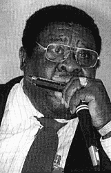

 |
HARMONICA FATS8 сентября 1927г., Луизиана - настоящее имя: Havey BLACKSTON ХАРМОНИКА ФЭТС - Американский певец и харпист, участник дуэта "Хармоника Фэтс - Берни Пиарл". |
В возрасте 19 лет переехал из Луизианы в Калифорнию. Не принял "местного" электрического стиля "уэст-коаст", предпочитая Дельта-блюз; хотя владел и использовал разнообразные стили. В любом случае, те музыканты, кто играл с ним, говорили, что Фэтс всегда отдает предпочтение искренности, а не техническому мастерству. Стал профессиональным исполнителем в 50-х. Прозвище "толстяк" соответствует действительности, и более того... Один из рекламных плакатов 50-х гласил: "Толстяк с гармошкой - 320 фунтов ритм-энд-блюза". Относительно успешной был лишь один его сингл с песней "Tore Up". Работал студийным музыкантом. Гастролировал не только со звездой соул и ритм-эхнд-блюза Сэмом Куком (Sam Cooke), но и с комедиантом Биллом Косби, и с комическим барабанщиком Ринго Старром.
Наибольшую известность получили его работы в дуэте с гитаристом Берни Пиарлом, с которым он познакомился во время джэма на концерте Блайнд Джо Хилла (Blind Joe Hill). В 1986 году стал участником The Bernie Pearl Blues Band, с которым записал в 1991 году альбом, опубликованный на лейбле, совладельцем которого он был вместе с Пиарлом. С первой половины 90-х Фэтс и Пиарл стали выступать как акустический дуэт. Именно эти работы пользовались наибольшим признанием.
Берни Пиарл: "Фэтс был просто хорошим человеком. Всегда дружелюбным, прямолинейным, честным во всех отношениях. И в каждую сыгранную ноту он верил всей душой. Он пел в грубоватом стиле, который нравился людям. Он был великолепным шоумэном. (Дуэт часто выступал в Диснейлэнде) Представьте себе, как он там усаживался - черный, толстый, рыкающий и гримасничающий - и детишки отвечали ему без смущения и очень тепло. Это было красиво."